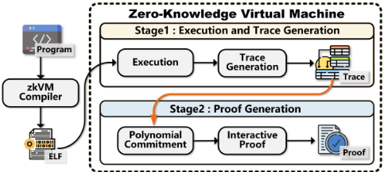
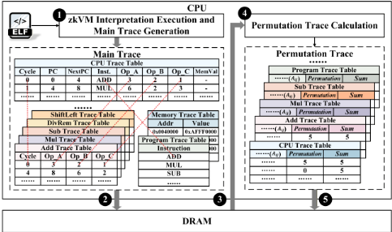
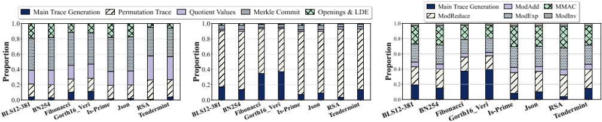
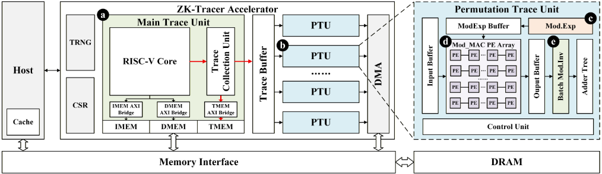
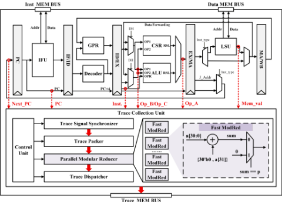
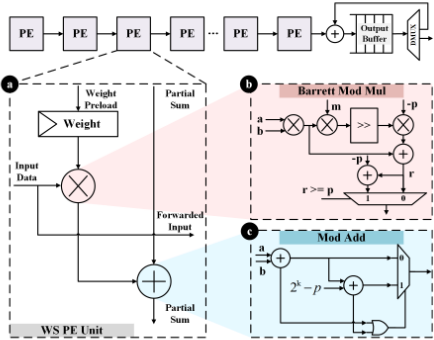
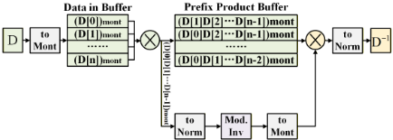
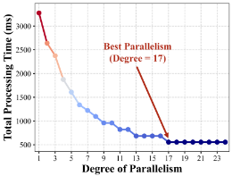
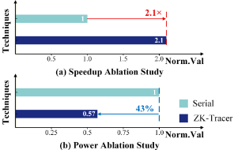
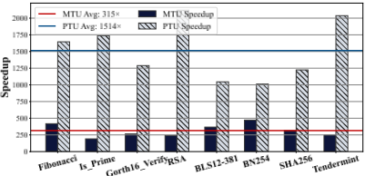

ZK-Tracer：面向零知识虚拟机（zkVM）Trace 生成的高性能异构加速器
论文指出，随着后端证明（MSM/NTT/hash）加速器成熟，zkVM 的前端执行与 trace 生成正成为新的系统瓶颈：在 SP1 上该阶段已占端到端证明时间的 20%~30%，后端加速后占比将升至 80% 以上。作者提出 ZK-Tracer，首个面向 zkVM 前端的硬件加速器，采用 MTU 与并行 PTU 的异构架构：MTU 基于开源 SCR1 RISC-V 核，以旁路侦听的 TCU 和 trace_on/trace_off ISA 扩展非侵入式采集 Main Trace；PTU 用模幂 LUT 预计算、weight-stationary MMAC 脉动阵列与 Batch 模逆单元构成四级流水计算 Permutation Trace，片上 Trace Buffer 打通两者深度流水。经 GEM5 建模选定 17 个并行 CU 的甜点配置，SystemVerilog（约 27 kLoC）实现于 TSMC 28nm，100 MHz 无时序违例，面积 0.21 mm²、功耗 51.167 mW。在 SP1 的 8 个 benchmark 上平均取得 1829× trace 生成加速（MTU 315×、PTU 1514×），集成后端 prover 后端到端最高 963×，CoreMark 上 IPC 退化约 0%。
现有 ZKP 硬件加速研究全部集中于后端证明阶段，将执行 trace 视为预先存在的静态输入；随着后端加速器把证明时间降低 2~3 个数量级，前端解释执行与 trace 生成（以模运算为主，Modular Inversion 单次延迟高、accumulator 串行更新缺乏 DLP/ILP，且存在 'write-back-then-read' 的低效内存访问模式）占比迅速膨胀。按 Amdahl 定律，该未优化前端将成为整个 zkVM 系统的主导瓶颈，制约端到端性能。
提出 ZK-Tracer 异构加速器，与 host CPU 紧耦合共享统一物理内存：(1) MTU 基于经典五级顺序 RISC-V 核（SCR1，出于确定性与能效选择 in-order 而非 OoO），在 EX/MEM 级嵌入旁路侦听的 Trace Collection Unit（TCU），捕获 PC/操作数/ALU 结果/访存值，经并行 FastModRed 单元即时转换为 Babybear 域元素且不引入反压；并扩展 trace_on/trace_off 两条自定义指令实现软件定义的按需 trace；(2) PTU 将 Permutation Trace 计算分解为四级级联流水：模幂预计算 + SRAM LUT（square-and-multiply 加 Montgomery 优化，把权重计算复杂度从 O(N·j) 降到 O(j) 并移出关键路径）、weight-stationary 一维 MMAC 脉动阵列（Barrett reduction、单 OR 门模加、clock gating 与部分和反馈迭代）、Batch 模逆单元（把 N 次求逆摊销为 1 次求逆加约 3(N-1) 次模乘，复杂度近 O(N)，单次求逆用 Extended Euclidean Algorithm）与并行前缀加法树；(3) MTU 产出的每行 trace 经片上 Trace Buffer 同时写主存并转发给 PTU，配合 DMA 与专用访存接口实现无冲突深度流水，消除 'write-back-then-read' 模式；(4) 用 GEM5 做 workload 分解与设计空间探索，确定 17 个并行 Compute Units 的性价比甜点，最终以 SystemVerilog 实现并在 TSMC 28nm 经 Synopsys Design Compiler 综合评估 PPA，DRAM 功耗用 DRAMSim3 的 DDR4 模型评估。
对 SP1 的 8 个官方 benchmark，trace 生成相对纯软件 CPU 方案平均加速 1829×（摘要表述为 up to 1829×）
分解来看：MTU 加速程序执行与 Main Trace 生成 315×，PTU 加速 1514×
集成现有后端证明加速器后，整个 ZKP 系统端到端最高加速 963×（论文结论中为 projected 值）
TSMC 28nm ASIC：100 MHz 无时序违例，总面积 0.21 mm²，功耗 51.167 mW；MTU 相对基线 SCR1 核面积增加 35%、功耗增加 5%
CoreMark 上集成 trace 模块后 IPC 退化约 0%，访存延迟无显著增加
GEM5 设计空间探索表明 PTU 并行度甜点为 17 个并行 Compute Units（MMAC Array 与 Batch Mod.Inv），此时 PTU 吞吐与 MTU 供给速率匹配
消融实验：片上 Trace Buffer 细粒度流水设计相比回退到传统顺序访问模式的版本，取得 2.1× 性能提升与 43% 功耗降低
据作者所述是首个针对 zkVM 前端执行与 trace 生成的硬件加速器架构，填补了此前只加速后端证明（MSM/NTT/hash）留下的空白。区别于把 trace 当静态输入的既有工作，其贡献在于：MTU/PTU 异构协同架构、非侵入式流水线侦听 trace 采集（TCU）加 ISA 级按需 trace 控制（trace_on/trace_off）、面向 'narrow and long' trace 特征的预计算 LUT 与 weight-stationary 脉动阵列，以及用片上 Trace Buffer 将 trace 写回与 permutation 计算深度流水以消除 'write-back-then-read' 内存访问模式。
相关度级别：medium
命中能力域：2.1 IP 架构与微架构 | 2.2 RTL 设计与实现
理由：论文的应用对象是 ZKP/zkVM 加速，不属于团队存储（LPDDR/HBM/DDR）与互连（UCIe）IP 的产品与技术场景，也未涉及 UVM/覆盖率、formal、emulation 等验证方法学，因此不判 high。但其工程方法与团队 2.1/2.2 能力域高度同构：先做 workload 分解与特征分析（模运算占比、DLP/ILP 缺乏、streaming-friendly 数据流判断），再用 GEM5 性能模型做设计空间探索并按 PPA 选定并行度甜点（17 个 CU），最后以开源 RISC-V 核为基础做可综合 RTL 扩展（约 27 kLoC）、clock gating 低功耗设计与 Design Compiler 综合评估——这套 'workload-driven 建模 → 微架构权衡 → RTL 实现 → PPA 评估' 流程与团队 IP 架构定义和 RTL 实现的日常工作方法一致，具有方法学借鉴价值。
建议动作：作为方法参考存档
arXiv:2605.25493v2 [cs.AR] 2026年5月26日
ZK-Tracer：面向零知识虚拟机（VM）轨迹生成的高性能异构加速器 ∗
Jieran Cui 1,2，Zhengkai Wen 1,2，Haowen Fang 2，Yinan Zhu 1,2，Jia Xiong 1,2，Cheng Ni 1,2，Mingchi Zhang 1,2，Nan Guan 3，Xi Wang ∗ 1,2
1 东南大学集成电路学院，中国
2 国家EDA技术创新中心，中国
3 香港城市大学计算机科学系，香港 ∗
零知识虚拟机（zkVM）是推动零知识证明（ZKP）大规模应用的关键技术，但其性能瓶颈严重限制了其实用性。当前的硬件加速研究均只聚焦于后端证明，而我们发现前端执行与轨迹生成阶段正迅速成为新的系统瓶颈。为应对这一挑战，我们提出了 ZK-Tracer——首个专为 zkVM 前端设计的硬件加速器架构。ZK-Tracer 采用新颖的异构设计，由一个主轨迹单元（Main Trace Unit）和多个并行的置换轨迹单元（Permutation Trace Unit）组成。它通过轻量级指令集扩展向宿主软件暴露细粒度接口，从而实现高效的任务卸载。我们的专用集成电路（ASIC）实现结果表明，ZK-Tracer 在轨迹生成方面相比高性能多核中央处理器（CPU）可实现高达 1829 × 的加速。与现有后端证明加速器集成后，它为整个 ZKP 系统带来了高达 963 × 的端到端性能提升。
零知识虚拟机，硬件加速
零知识证明（Zero-Knowledge Proofs, ZKPs）[10] 是构建下一代可信数字系统的基石。它使证明者能够在不泄露任何额外信息的前提下，让验证者确信某一命题的有效性。这一革命性特性在以太坊扩容（如 ZK-Rollups）[14, 27, 36]、隐私保护计算 [5, 6] 以及可验证人工智能（AI）[2, 7, 39] 等前沿领域展现出巨大潜力，吸引了学术界与产业界的广泛关注。
然而，传统的 ZKP 开发需要深厚的密码学专业知识来手工设计算术电路，入门门槛极高。为克服这一障碍，零知识虚拟机（Zero-Knowledge Virtual Machine, zkVM）应运而生。通过允许开发者使用 Rust 等高级语言进行编程，zkVM 显著降低了开发门槛，因而被视为推动 ZKP 大规模应用的关键使能技术。然而，其性能已成为阻碍其广泛应用的首要瓶颈。与原生编译执行相比，zkVM 的速度可能慢数十万乃至数百万倍 [31]。这一巨大的性能差距使其难以应用于许多现实场景。一个完整的 zkVM 工作流程，如图
∗ 本文已被 DAC 2026 录用，将收录于会议论文集。
通讯作者：xi.wang@seu.edu.cn

1 所示，由两个主要阶段组成：（1）前端执行与轨迹生成（Front-end Execution and Trace Generation），即解释执行程序并记录其计算步骤；（2）后端证明生成（Back-end Proof Generation），即利用所生成的轨迹，通过 zk-STARK 和 zk-SNARK [22] 等复杂密码学算法生成最终证明。
目前，学术界与产业界的硬件加速研究均无一例外地聚焦于计算密集型的后端证明阶段 [1, 3, 8, 13, 16, 17, 26, 32, 41]。这些工作通常将执行轨迹视为预先存在的静态输入，从而忽略了其前端生成的开销。然而，我们的研究表明，这种“以后端为中心”的优化视角正在变得过时。通过对最先进的 zkVM（Succinct SP1 [28]）进行深入的性能分析，我们发现，对于一组代表性程序，前端执行与轨迹生成阶段已占端到端证明时间的 20% 至 30%。根据 Amdahl 定律，随着后端加速器的不断改进，这一未经优化的前端正迅速演变为系统性能的主导性瓶颈。例如，即使后端仅获得保守的 10 × 加速，前端在运行时间中的占比也将飙升至 80% 以上，严重限制端到端性能的进一步提升。
为应对这一新兴且关键的挑战，本文提出了 ZK-Tracer，这是首个专为零知识虚拟机（zkVM）前端执行与轨迹生成而设计的硬件加速器架构。我们的工作是对现有后端证明加速器的关键补充，旨在实现全栈、高性能、端到端的 zkVM 解决方案。
本文的主要贡献如下：

用于并行处理置换轨迹（Permutation Trace）的置换轨迹单元（PTU）。这些单元通过自定义指令集架构（ISA）高效工作。
近年来，硬件加速已成为克服零知识证明（ZKP）系统令人望而却步的计算开销的关键途径。迄今为止，学术界与工业界的研究工作均只专注于加速后端证明阶段。通过为多标量乘法（MSM）[12, 18, 20, 23, 24, 37]、数论变换（NTT）[4, 11, 21, 38, 40]以及哈希计算[3, 19, 26, 33]等计算密集型原语设计专用硬件，这些工作已将证明生成时间缩短了两到三个数量级。然而，正是这些 ZKP 后端加速器的成功本身，从根本上改变了性能格局。正如 Amdahl 定律所揭示的，前端执行与轨迹生成阶段的相对开销被急剧放大，使其成为一个新兴瓶颈，如今正制约着整个 ZKP 系统的端到端性能。
为了定量地说明这一瓶颈转移现象，我们使用典型的 zkVM 系统（SP1）对一组代表性程序（例如哈希、签名验证和区块链验证）进行了细粒度的运行时剖析，结果如图 3（左）所示。在当前的纯软件实现中，前端执行与轨迹生成阶段已占端到端证明时间的 20% 至 30%。
此外，通过参考主流后端加速器的性能报告 [3, 19, 21, 26, 33, 38, 40, 42]，我们估计其后端的总体平均加速比约为 184×。在保守假设仅达到该后端加速的 20% 的情况下，运行时分解如图 3（右）所示。分析表明，前端开销的占比将急剧攀升至 90% 以上，成为压倒性的主导瓶颈。
这一分析表明，后端加速器带来的巨大收益正被不断增长的前端开销显著抵消，从而限制了整体端到端性能的提升。因此，针对 zkVM 前端轨迹生成的硬件加速已不再是“锦上添花”式的优化，而是势在必行。这是打破当前 ZKP 系统性能天花板、充分释放后端加速全部潜力的关键一步。
执行轨迹（execution trace）是 zkVM 中的核心数据结构，它以表格化、按时间顺序的形式细致地记录程序执行过程中的机器状态。为了降低约束复杂度并提升证明效率，现代高性能 zkVM（例如 RISC0 [25]、SP1 [28]）采用了多表架构。该架构并非将所有状态合并到单一的单体表中，而是采用多个协同工作的专用表。CPU 表作为中央枢纽，记录指令流与状态演化。与此同时，诸如 ALU 表之类的专用表则负责处理算术和逻辑等不同类型的运算。内存表和程序表分别记录内存和代码的初始状态与最终状态，以验证访问一致性。为了保证跨表一致性，这些系统广泛采用基于对数导数的查找论证（LogUp）[29]。该机制将表间交互和内存访问统一为“发送/接收”（send/receive）对，并通过置换/查找累加器维护多重集合相等性。因此，执行轨迹不可避免地由两个部分组成：由程序语义直接生成的主轨迹（Main Trace），以及为跨表通信而构建的置换轨迹（Permutation Trace）。置换轨迹按照公式 1 所述进行计算，其中 𝛾 和 𝛽 为随机挑战值，𝐴 𝑖 𝑗 为来自轨迹表的值。
图 2 展示了在通用 CPU 上生成 zkVM 执行轨迹的典型工作流程。该流程首先 1 通过解释执行的方式运行 Guest 程序，即时生成主轨迹，随后 2 将其写入 DRAM。在整个主轨迹生成完成后，该流程 3 从 DRAM 中读回所有这些数据；基于这些数据，随后 4 计算跨表通信所需的置换列与累加器列，从而构成置换轨迹。最后，5 将该置换轨迹写回内存，以供后续的证明阶段使用。这一流程揭示了在通用 CPU 上性能缓慢的根本原因包括：
ZK-Tracer：面向零知识虚拟机轨迹生成的高性能异构加速器

其基本运算（包括模逆运算和累加器列的顺序更新）几乎不表现出数据级并行（DLP）或指令级并行（ILP）。因此，超标量执行与乱序调度等关键体系结构机制所能带来的收益有限，因为该工作负载由长依赖链主导，几乎没有可供利用的独立指令。
我们进一步对轨迹生成阶段所涉及的算子进行了工作负载分解，如图 4 所示。除主轨迹生成之外，置换轨迹计算主要由模运算构成。模约简、模乘累加（MMAC）和模幂运算等关键运算各占工作负载的 20% 以上，而模加运算的出现频率相对较低。尽管模逆运算仅占总运算量的一小部分，但其单次运算的高延迟使其成为关键瓶颈，在软件实现中尤为突出。总体而言，置换轨迹计算具有计算模式规整、并行度高以及数据流适合流式处理的特点。基于这一分析，zkVM 执行轨迹生成任务展现出显著的硬件加速潜力。通过设计高效的内存访问通道和专用的并行计算单元，轨迹生成的核心计算负载可以从低效的软件仿真转移到高速的原生硬件执行，从而实现大幅加速。
图 5 展示了我们所提出的专用硬件加速器 ZK-Tracer 的总体架构。ZK-Tracer 被设计为一个异构计算单元，与主机 CPU 紧耦合，并共享统一的物理内存空间，以实现高效的数据交换。该架构围绕两个核心计算引擎构建：主轨迹单元（MTU）和并行的置换轨迹单元（PTU）。PTU 实例的数量被设计为与 zkVM 所需的轨迹表数量相匹配。这些引擎由一套必要的外设提供支持，包括用于产生密码学挑战的真随机数发生器（TRNG）、高性能直接存储器访问（DMA）引擎，以及一组用于主机配置和控制的控制与状态寄存器（CSR）。MTU 负责执行 zkVM 程序以生成主轨迹（Main Trace），而并行的 PTU 则计算确保跨表一致性所需的置换轨迹（Permutation Trace）。
ZK-Tracer 的工作流程始于主机 CPU 分配轨迹内存、通过 CSR 配置加速器，并发出启动命令以卸载该任务。一旦被激活，MTU 便从其专用存储器（IMEM/DMEM）中执行 zkVM 指令（RISC-V），逐行生成主轨迹。以流水线方式，每一条生成的主轨迹行在通过 TMEM 接口写入主存的同时，也被并行转发至片上轨迹缓冲区（Trace Buffer）。各 PTU 并行工作，从该缓冲区中读取轨迹行以计算辅助列，并利用 DMA 引擎将结果写回主存。最后，任务完成后，ZK-Tracer 向主机 CPU 发出中断，主机 CPU 随后即可访问完整的轨迹数据，以进入后续的证明生成阶段。
片上 Trace Buffer 充当 MTU 与 PTU 之间的高速数据通道，建立了一种深度流水化的执行模型。这一设计选择免除了 PTU 反复从高延迟片外存储器读取大量主轨迹数据的需要，从而显著降低了延迟、内存带宽争用和功耗。此外，MTU 写回路径与 PTU DMA 路径均采用专用内存接口，确保了无冲突的并行数据传输。
为了实现高效且灵活的基于硬件的轨迹生成，我们在标准 RISC-V 核上采用了两项关键的协同设计：

针对非侵入式轨迹捕获的微架构扩展，以及针对细粒度、软件定义控制的指令集架构（ISA）定制。主轨迹单元（MTU）负责准确执行 zkVM 的 RISC-V 指令集，并在此过程中同步生成确定性的主执行轨迹。该轨迹构成了后续零知识证明系统进行证明生成所需的原始数据。

微架构扩展。为了在不干扰核执行流的情况下捕获执行轨迹，我们在流水线中集成了一个非侵入式的轨迹收集单元（TCU）。如图 6 所示，TCU 作为一个旁路模块，直接侦听关键的流水线路径。在执行（EX）级和访存（MEM）级，TCU 同时捕获一组结构化数据，包括程序计数器（PC）、操作数、算术逻辑单元（ALU）结果以及存储器访问值。随后，捕获到的 32 位原始数据由一组并行的轻量级模约减单元（FastModRed）即时转换为证明系统所要求的 Babybear 域元素。该过程仅需一次加法，计算开销可忽略不计，且不会给流水线引入任何反压。最后，处理后的轨迹数据被复制并分发至两个目的地：一份通过专用轨迹总线写回主存，另一份则被送入片上 Trace Buffer。
Trace MEM BUS
核心设计选择。我们将 MTU 设计为一个经典的五级顺序执行 RISC-V 核，这一决策由零知识证明（ZKP）的两项关键需求所驱动：确定性和能效。顺序执行模型天然地生成 ZKP 所需的可复现轨迹，从而避免了乱序（OoO）架构中与指令重排相关的复杂硬件和验证开销。此外，作为专用加速器，其首要设计目标是最大化能效。与功耗高、成本高的 OoO 同类设计相比，简单的顺序执行核是更优的选择。
活动。通过插入这些指令来界定目标代码段，开发者或编译器可以精确划定需要证明的感兴趣区域。这种细粒度的控制机制提供了显著的灵活性，可大幅减少不必要的存储、带宽和功耗。
To enforce cross-table consistency, the LogUp protocol requires the generation of a Permutation Trace. This process is computationally intensive, involving a massive volume of modular arithmetic, which constitutes a significant performance bottleneck in the zkVM trace generation flow. To address this bottleneck, we designed a dedicated Permutation Trace Unit. As illustrated in Figure 5 b , the PTU decomposes the entire computation into a four-stage, sequentially cascaded pipeline, with each stage realized by a specialized hardware module: a Modular Exponentiation Unit, a Systolic Array for Modular Multiply-Accumulate, a Batch Modular Inversion Unit, and a Parallel Prefix adder Tree.
Modular Exponentiation Unit. As depicted in Figure 5 c , this unit is designed to calculate the modular exponentiation of the random challenge 𝛽 . Our design leverages a key structural
Extension of the Instruction Set Architecture (ISA). Indiscriminate tracing of an entire program generates a massive volume of trace data, leading to prohibitive system overhead. To enable software-defined, on-demand trace generation, we extend the RISC-V ISA [34, 35] with two custom instructions: trace_on and trace_off . When the instruction decoder detects trace_on , the TCU begins capturing the trace starting from the subsequent instruction. Conversely, upon detecting trace_off , it suspends this
ZK-Tracer: A High-Performance Heterogeneous Accelerator for Zero-Knowledge VM Trace Generation
×


property of zkVM traces: they are 'narrow and long' ,where the number of columns, 𝑘 , is typically small (from a few to hundreds), while the number of rows, 𝑁 , can be in the millions or more. We discard the inefficient method of recomputing weights { 𝛽 𝑗 } for each row, instead adopting a precomputation and lookup strategy. As a preprocessing step, the unit computes the entire set of required weights in a single batch using a square-and-multiply modular exponentiation algorithm with Montgomery optimization. These weights are then populated into a dedicated on-chip SRAM-based Look-Up Table (LUT). This design amortizes the cost of expensive modular exponentiations from 𝑂 ( 𝑁 · 𝑗 ) to 𝑂 ( 𝑗 ) and removes it from the critical path of per-row processing, thereby providing low-latency weight access for the subsequent pipeline stages.
模乘累加（Modular Multiply-Accumulate，MMAC）脉动阵列。如图 5 d 所示，该单元由一组并行的、权重固定（weight-stationary）的一维脉动阵列构成。这种设计能够并发处理多条轨迹行，从而显著提升整体吞吐量。脉动阵列的电路结构如图 7 所示。其处理单元（Processing Element，PE）内的核心运算逻辑经过精心设计以降低资源消耗：模乘采用 Barrett 约减算法，以规避 Montgomery 方法所涉及的域转换开销——这种域转换与流式架构不兼容；模加则通过一种优化电路实现，用单个或门取代了代价高昂的比较器。在运行过程中，预先计算好的权重仅加载一次，并固定驻留在所有 PE 中，随后多行轨迹数据被并行地流入阵列。对于列宽较小的表，控制逻辑通过时钟门控动态禁用冗余的 PE，以降低功耗。对于更宽的表，我们设计了一种高效的部分和反馈机制，通过多次迭代完成计算，从而确保了架构的通用性。
| Category | Component | Specification |
|---|---|---|
| CPU Baseline | CPU Memory OS zkVM Compiler | Intel Xeon E7-8860 v4@ 2.20GHz, 64 cores 2 TB Ubuntu 22.04 Succinct SP1 v1.0.1 rustc 1.87.0 |
| ASIC Implementation | HDL Process Synthesis Tool | SystemVerilog TSMC 28nm HPC+ Synopsys DC |
| Category | Component | Specification |
批量模逆单元（Batch Modular Inverse Unit）。如图 5 e 所示，该单元用于计算模逆。置换列的生成需要模逆运算。然而，若逐个计算这些模逆，其复杂度为 𝑂 ( 𝑁 log 𝑝 ) ，将成为新的性能瓶颈。为解决这一问题，PTU 集成了一个批量模逆单元，如图 8 所示。该单元将 𝑁 个独立模逆运算的计算成本摊销为仅一次模逆和约 3 ( 𝑁 - 1 ) 次模乘。这将整体复杂度降低至接近 𝑂 ( 𝑁 ) 。所需的唯一一次模逆采用扩展欧几里得算法（Extended Euclidean Algorithm）实现，从而显著提升了置换列的生成效率。
据我们所知，ZK-Tracer 是首个面向 zkVM Trace 生成的硬件加速器。为了全面评估其性能，我们选择了业界领先的 SP1 zkVM [28] 作为性能基线。之所以选择 SP1，是因为它被广泛认为是速度最快、效率最高的开源 zkVM。我们使用 SP1 官方提供的 8 个基准测试程序进行测试，这些程序涵盖了广泛的计算类型与规模（递归算法、密码学计算以及区块链任务）。这些基准测试多样且具有代表性，能够对 ZK-Tracer 的性能进行全面评估。在硬件实现方面，ZK-Tracer 采用台积电（TSMC）28nm 工艺进行专用集成电路（ASIC）综合，其性能、功耗和面积（PPA）指标由 Synopsys Design Compiler 获得。在 DRAM 功耗评估方面，我们集成了 DRAMSim3 [15] 中的 DDR4 模型。详细的实验环境配置汇总于表 1。
性能开销分析。我们首先在 GEM5 [9] 中评估 ZK-Tracer 的性能开销。通过在 CoreMark 基准测试套件上将标准 MinorCPU 核心与集成 ZK-Tracer 的核心进行对比，我们测得每周期指令数（IPC）的下降约为 0%，几乎可以忽略，且内存访问延迟无显著增加。这一极小的开销归因于我们采用的非侵入式、基于侦听的设计，该设计将追踪模块与处理器的关键执行路径完全解耦。因此，它能够在不损害原生性能的前提下实现轨迹生成能力。



| PPA | SCR1 (Baseline) | MTU(Overhead) | ZK-Tracer |
|---|---|---|---|
| Frequency Area | 100MHz 2 | 100MHz (+0%) 0.026mm 2 (+35%) | 100MHz |
| 0.020mm | 0.210mm 2 | ||
| Power | 0.140mW | 0.147mW (+5%) | 51.167mW |
| PPA | SCR1 (Baseline) | MTU(Overhead) | ZK-Tracer |
ZK-Tracer 架构参数分析。我们利用 GEM5 模型来探索 ZK-Tracer PTU 并行度的设计空间，在性能与成本之间进行权衡。如图 9 所示，最佳平衡点为 17 个并行计算单元（MMAC Array 和 Batch Mod.Inv），此时 PTU 吞吐量与 MTU 供给速率相匹配，从而使硬件效率最大化。因此，我们在最终 ASIC 架构中选择了这一高性价比配置。
基于我们从 GEM5 C++ 模型中获得的洞察与架构参数，我们使用 SystemVerilog（约 27 kLoC）实现了所提出的 ZK-Tracer 加速器，以评估其硬件开销与性能。我们的设计基于开源且经过硅验证的 SCR1 RISC-V 核 [30]。ZK-Tracer 与基线相比的功耗、性能与面积（PPA）结果汇总于表 2 中。结果表明，MTU 的功能是通过扩展 SCR1 核实现的，面积开销仅增加 35%，功耗开销仅增加 5%。完整的 ZK-Tracer 加速器在 100 MHz 下可靠运行，无时序违例。芯片总面积仅为 0.21 mm²，功耗低至 51.167 mW。
表 3 展示了 ZK-Tracer 与 CPU（运行 SP1）之间的执行时间对比。实验结果表明，ZK-Tracer 在所有测试中均展现出压倒性的性能优势，相比纯软件方案实现了平均 1829 倍的加速。这证明了专用硬件架构在加速核心 zkVM 计算任务方面的潜力。进一步分析（如图 10 所示）表明，MTU 将程序执行与 Main Trace 生成的速度提升了
| Benchmark | CPU (s) | ZK-Tracer (ms) | Speedup |
|---|---|---|---|
| Fibonacci | 5.6 | 2.7 | 2063 × |
| Is_Prime | 4.1 | 2.1 | 1929 × |
| Gorth16_Verify | 5.5 | 3.6 | 1554 × |
| RSA | 102.5 | 43.4 | 2362 × |
| BLS12-381 | 477.6 | 338.0 | 1413 × |
| BN254 | 379.1 | 255.4 | 1484 × |
| SHA256 | 88.5 | 57.5 | 1538 × |
| Tendermint | 107.4 | 47.0 | 2286 × |
| Average | - | - | 1829 × |
| Benchmark | CPU (s) | ZK-Tracer (ms) | Speedup |
315 倍，而 PTU 则凭借其计算中的高度并行性，实现了更为显著的 1514 倍加速。
我们开展了消融实验（ablation study），以验证 MTU 与 PTU 流水线设计的优势。传统方法受限于低效的“先写回后读取”（write-back-then-read）主存访问模式。相比之下，ZK-Tracer 通过引入片上 Trace Buffer，并提升定制计算单元的并行度以匹配流水线吞吐量，从而克服了这一瓶颈。这使得 MTU 的 Trace 生成与 PTU 的 Trace 计算得以深度流水化，从而隐藏主存访问延迟。实验将 ZK-Tracer 与回退至传统顺序访问模式的消融版本进行了对比。
图 11 表明，我们的细粒度流水线设计实现了 2.1× 的性能提升，并将功耗降低了 43%。
本文实现了 ZK-Tracer，这是首个专门用于解决 zkVM 中前端执行与 Trace 生成瓶颈的专用硬件加速器。其核心是一种异构协同设计架构，包含主 Trace 单元（Main Trace Unit）与置换 Trace 单元（Permutation Trace Unit）。我们的 ZK-Tracer 专用集成电路（ASIC）实现与高性能 CPU 相比，可将 Trace 生成加速高达 1829 ×。当与最先进的证明器集成时，这一组件级加速可折算为预计高达 963 × 的端到端加速。ZK-Tracer 填补了当前零知识证明（ZKP）硬件加速领域的一项关键空白，是迈向构建全栈、端到端高性能 ZKP 系统的决定性一步。
ZK-Tracer：面向零知识虚拟机 Trace 生成的高性能异构加速器